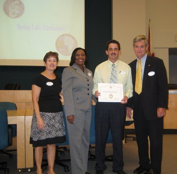

Awards and Recognition
Dual Language Classes on the Rise in Central Florida
When it comes time for math and phonics at Spring Lake Elementary School, first-graders in an experimental classroom stop speaking English and start learning in a language that's foreign to many of them.
Read the full article in Orlando Sentinel
Spring Lake Elementary Awarded Five Star School Award

Principal Alex Agosto accepts the Five Star Award from Supt. Bill Vogel.
The Five Star School Award was created by the Commissioner's Community Involvement Council and is presented annually to those schools that have shown evidence of exemplary community involvement. In order to earn FIVE STAR school recognition, a school must show documentation that it has achieved 100% of the established criteria in the categories of:
- Business partnerships
- Family Involvement
- Volunteerism
- Student Community Service
- School Advisory Councils.
Community Invovlement
The students and staff of Spring Lake Elementary would like to extend a very heartfelt "Thank You" to the following Business Partners who have supported us this year. Please support them when you can. If you are interested in becoming a Business Partner please contact Spring Lake at 407-746-1650.